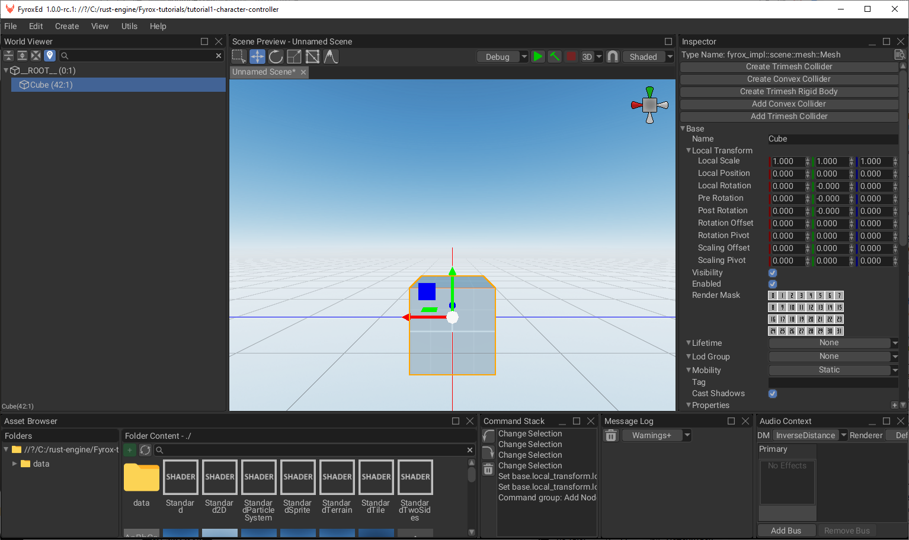

Manual Installation
⚠️ This section is mostly for console users and those who like building their software from source code. This section relies on using
fyrox-templateCLI tool, Project Manager uses it as well, but with the benefits of a GUI.
Quick Start Using Console Commands
Run the following commands to start using the editor as quickly as possible.
cargo install fyrox-template
fyrox-template init --name fyrox_test --style 2d
cd fyrox_test
cargo run --package editor --release
Project Generator CLI
Fyrox offers a special tiny command line tool - fyrox-template, the project manager uses its core functionality as
well. This helps generate all the boilerplate code with a single command. Install it by running the following command:
cargo install fyrox-template
Note for Linux: This installs it in $user/.cargo/bin. If receiving errors about the fyrox-template command not
being found, add this hidden cargo bin folder to the operating systems $PATH environment variable.
Now, navigate to the desired project folder and run the following command:
fyrox-template init --name my_game --style 3d
Note that unlike cargo init, this will create a new folder with the given name.
The tool accepts two arguments - a project name (--name) and a style (--style), which defines the contents of the
default scene. After initializing the project, go to game/src/lib.rs - this is where the game logic is located, as you
will see, the fyrox-template generates quite a bit of code for you. The code is decorated with comments explaining
what each place is for. For more info about each method, please
refer to the docs.
Once the project is generated, two commands can be used to run your game in different modes:
cargo run --package editor --release- launches the editor with your game attached. The editor allows you to run your game from it and edit its game entities. This is intended to be used only for development purposes.cargo run --package executor --release- creates and runs the production binary of your game. This command generates executables which can be shipped (for example - to a store).
Navigate to your project's directory and run cargo run --package editor --release, after a short while, you should see
the editor:

In the editor you can start building your game scene. Important note: your scene must have at least one camera, otherwise you won't see a thing. Read the next chapter to learn how to use the editor.
Using the Latest Engine Version
Due to the nature of software development, bugs will inevitably sneak into the major releases, due to this, it is recommended to always use the latest engine version from the repository on GitHub. This is most likely to have bugs fixed (you can also contribute by fixing any bugs you find or at least, by filing an issue).
Automatic
⚠️
fyrox-templatehas a special sub-command -upgradeto quickly upgrade to a desired engine version. To upgrade to the latest version (nightly) you should executefyrox-template upgrade --version nightlycommand in your game's directory.
There are three main variants for --version switch:
nightly- uses latest nightly version of the engine from GitHub directly. This is the preferable version if you want to use the latest changes and bug fixes as they are released.latest- uses latest stable version of the engine. This option also supports--localkey, that sets the path to the engine to../Fyrox/fyroxand the editor to../Fyrox/editor. Obviously, this path requires the engine to be located in the parent directory of your project. This option could be useful if you want to use a custom version of the engine (for example, if you're developing a patch for the engine).major.minor.patch- uses a specific stable version from crates.io (0.30.0for example).
Manual
The Engine version can also be updated manually. The first step is to install the latest fyrox-template, this can be
done with a single cargo command:
cargo install fyrox-template --force --git https://github.com/FyroxEngine/Fyrox
This will ensure you're using the latest project/script template generator, which is very important; old versions of the template generator will most likely generate outdated code, which is no longer compatible with the engine.
To switch existing projects to the latest version of the engine, you will need to specify paths pointing to the remote
repository for the fyrox and fyroxed_base dependencies. All you need to do is to change paths to these dependencies
in the root Cargo.toml:
[workspace.dependencies.fyrox]
version = { git = "https://github.com/FyroxEngine/Fyrox" }
default-features = false
[workspace.dependencies.fyroxed_base]
version = { git = "https://github.com/FyroxEngine/Fyrox" }
Now your game will use the latest engine and editor, but beware - new commits may surface some API mis-matches. You can
avoid these by specifying a particular commit, just add rev = "desired_commit_hash" to every dependency like so:
[dependencies]
[workspace.dependencies.fyrox]
version = { git = "https://github.com/FyroxEngine/Fyrox", rev = "0195666b30562c1961a9808be38b5e5715da43af" }
default-features = false
[workspace.dependencies.fyroxed_base]
version = { git = "https://github.com/FyroxEngine/Fyrox", rev = "0195666b30562c1961a9808be38b5e5715da43af" }
To bring a local git repository of the engine to the latest version, just call cargo update at the root of the
project's workspace. This will pull the latest changes from the remote, unless there is no rev specified.
Learn more about dependency paths on the official cargo
documentation, here.